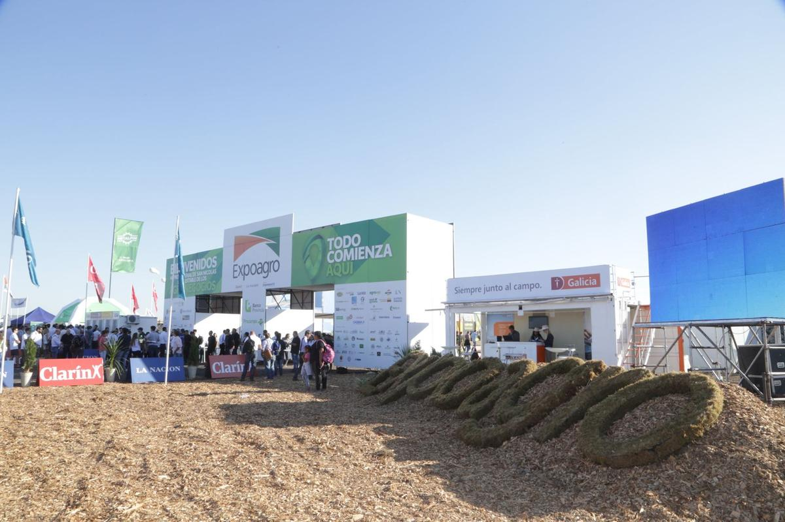

Expos · Expos
Expoagro 2027
- Dates
- –
- Venue
- Expoagro predio, RN 9 km 225, San Nicolás, Buenos Aires province
- Location
- San Nicolás, Argentina
- Format
- In-person
- Category
- Expos
- Industry
- Agricultural and agribusiness exhibition
- Organiser
- Exponenciar
- Expected attendance
- 250,000
- Official website
- https://www.expoagro.com.ar/evento/expoagro-2027/
About
Dates are local to the host city. Official Expoagro 2027 page: 9–12 March 2027 at the predio on RN 9 km 225, San Nicolás, Buenos Aires province. Opening hours and ticket prices were not listed on that page. Official 2026 actual: 'asistieron más de 250.000 visitantes' and 700 exhibitors — stored as 250,000 visitors with a 'más de' note. Organiser contact on the official page uses exponenciar.com.ar addresses. City is San Nicolás, not Buenos Aires city.
Topics: agriculture, agribusiness, farm machinery, livestock.
Official Expoagro 2027 page, recap of the 2026 edition: 'asistieron más de 250.000 visitantes' and 700 exhibitors. Stored as 250,000 with the official 'más de' wording.
Sources
- Official — https://www.expoagro.com.ar/evento/expoagro-2027/